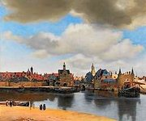
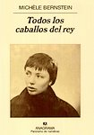
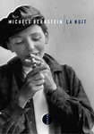

I beg to report to you that some functionalities of this site need javascript activated, and HTML5
432hz SCOOTWAVE
Desde Covid-19 an 2
Home | Entrada | Nosotros | Comentarios | Links
About | Concepto | Transcurso | Acción
[[ Se debe tomar en cuenta que esta sección del sitio web está en construcción y se publica a modo de prueba; el contenido se incluirá en la versión final ampliada. ]]
X X Adult Scootering X X
The Finest Adult Scootering
x x x

Album 1
Por las Trochas Urbanas
El leatherman (el hombre de cuero), un vagabundo legendario, cuya identidad sigue siendo desconocida, que circuló incesantemente entre 1850 y 1889 por el norte de Nueva Inglaterra y el estado de Nueva York.
Vestido con un mono y una chaqueta hecha de trozos de cuero cosidos de forma tosca, como su sombrero y su bolso, le apodaban El Hombre de Cuero. En los pueblos por los que pasaba pedía comida y también aceptaba tabaco, que fumaba en pipas que él mismo fabricaba. Durmia en refugios rocosos a lo largo del camino
A partir de 1883 fijó su ruta en un único itinerario de unos 400 kilómetros, que repitia incansablemente en 34 días.
La prensa se interesó por esta extraña personalidad y varios artículos en diversos periódicos evocaron su historia.
Eterno caminante, vagabundo, alienado... La línea parece borrosa, su mundo consistía en vagar y este hecho le hizo famoso.
En el fondo, el siguió su camino del deseo.
PERSIGUIENDO EL CONCEPTO.
Al final de este Hint & Street 1 esperamos haber logrado cumplir nuestro concepto mencionado en las páginas anteriores, un éxito que allanaría el camino para Hint & Street 2 et siguientes...

En la dehesa (In The Green), o, una ordinaria aventura de un monopatinador en un entorno urbano, por Fulano senior, el bardo de las calles, el Mungo Park de las aceras.
Wandering
Los escépticos, los burlones, los hombres superficiales que juzgan todo sin saber, llamarán infantilismo al scooterismo.
Están equivocados; lo demostraremos aquí.
Con espíritu de Mungo Park, de René Caillié, – Oh ! Manes, inspírenme! - e impregnado de las fallas de mi idiosincrasia, con esta primera obra de Hint & Streets nos embarcamos en un paseo campestre en un entorno urbano, un sueño pastoral restituido por el paseo en scooter, como la época de Combray fue restituida por el sabor de una taza de té.
El viento de los grandes horizontes sopla y me empuja hacia el follaje metropolitano. Ánimo ! « A las cinco (no se puede comenzar de otro modo, definitivamente) abandonamos los lechos » Fernando González [ver foto 2]
« Y, sin embargo, aunque me preocupan los días venideros, una fuerza poderosa me empuja hacia adelante, no puedo resistirle. » Kazimierz Nowak [ver foto 3]
Entremos en la intimidad del monopatinador.
La tetera está sobre la mesa. Así como un plato con magdalenas, cada una envuelta en celofán sellado, proveniendo de la caja con la inscripción "Magdalenas de Commercy".
Pequeño pastelito, exquisito de sabor y de contorno, similar a un seno apenas núbil.
Un buen olor a té caliente proviene de la tetera que hay sobre la mesa; se esparce en la habitación, luego atraviesa la abertura de la puerta, perdura a lo largo del pequeño panel naranja de la pared – donde esta colgada una reproducción del famoso cuadro Vista de Delft – del pasillo y se extiende al resto del apartamento.
Aquí está nuestro protagonista, cómodamente tendido frente al televisor, ojeando monumentos desconocidos de la literatura francesa: Tous les Chevaux du Roi (Todos los caballos del rey) y La Nuit (La Noche), de Michèle Bernstein, una de las figuras y miembro fundadora de la extinta organización: Internacional Situacionista, cuyo líder era Guy Debord, escritor y teórico francés (que reflexionó sobre la reificación).
En la mesita de noche de madera gruesa y de tono claro, otra novela, Le Voyeur (El Mirón), de Alain Robbe-Grillet [ver vídeo 1], escritor y cineasta francés, líder del Nouveau Roman (la "Nueva Novela").Sobre esa misma mesita hay un plato pequeño con dos mitades de melocotones una al lado de la otra, dos nalgitas de color amarillo anaranjado, redondas, carnosas, aterciopeladas, reminiscencia de la adolescente de la magdalena.
La luz que entra en la habitación es filtrada por un estor enrollable, que alterna bandas horizontales marrón (opacas) y blancas (transparentes) de 20 centímetros de altura. La ventana está cerrada. Para que no pueda entrar "Él", entidad invisible pero omnipresente, de origen desconocido, que se apoderó del mundo, que todos saben que está ahí y que todos temen. ¡De dónde vinó! ¡Cómo vinó! ¿De Brasil? ¿En velero?
Interesante como parece nuestro protagonista interesado en esa autora, Michèle Bernstein, involucrada en el tema de la deriva, cuya teoría planteó el situacionista Guy Debord en una publicación titulada Teoría de la Deriva, teoría de la que hablamos en la página concepto de este sitio.
En cuanto al Nouveau Roman, es de especial interés para nosotros para el desarrollo de este sitio, por la forma en que rechaza las convenciones de la novela tradicional. Sin referencia a la psicología de los personajes, deconstrucción de la linealidad de la historia, paradojas ...
Seguro que nuestro protagonista, el monopatinador, nos depara algunas sorpresas; ¡nosotros también le deparamos algunas para él!
Por cierto, ¿qué está escuchando en este momento en su reproductor de mp3, ¡mientras ve la televisión y lee un libro!?
¡Dios mio! Ya, es momento dejar sitio a la narrativa.
El monopatinador : ¡Por Favor! Quisiera intervenir como protagonista que soy:
Me parece oportuno precisar que, según lo que he entendido, en este sitio, paseo, déambulación, etc... deben entenderse como deriva. O me equivoco ?
El narrador : tiene razón. Imagino que el guionista (el webmaster) consideró eso como adquirido de los lectores, pero si, habia que confirmarlo. Yo aprovecho la oportunidad para señalar un interesante enlace sobre la novela El Mirón, un aclarante análisis de esa novela precedido de una presentación de la "Nueva Novela" : Alain Robbe-Grillet y su Creciente Parodización del Género Policial.
El monopatinador : el webmaster parece estar muy centrado en estos temas. Tengo curiosidad por ver cómo se desarrollará esto en la narrativa aquí. A menos que sea solo una declaración de intenciones...
El narrador : no sea insolente, por favor.
El monopatinador : por cierto, las novelas Todos Los Caballos del Rey y El Mirón están disponibles (en español); personalmente las compré en Amazon.
El narrador : usted no compró nada. Es protagonista por voluntad del webmaster, una palabra en un texto.
El monopatinador : . . . . . . . . . .
El narrador : por curiosidad, ¿cual es esa música que esta escuchando?
El monopatinador : es música antigravitacional.
El narrador : . . . . . . . . . .
El monopatinador : ¿No hay algo ardiendo? Aquí está lleno de humo.
El narrador : el webmaster dejó una pipa encendida en la pantalla.
El monopatinador : ¡Caramba! Que va a pasar si se quema el sitio web ?
El narrador : si el no ha hecho una copia de seguridad estamos fritos.
El monopatinador : tenemos que llamar su atención para que se lo piense.
El narrador : tiene razón, creo que los visitantes entenderán ese punto. ¡Adelante!
El monopatinador - el narrador :
Dirigiéndose a la salida principal y única del edificio donde vive, el monopatinador pasa junto al celador que amablemente le comenta que le parece una ruina.
Le informa que le esta molestando un trastorno intestinal; el celador permanece en silencio. Ignorando ese trastorno suyo el monopatinador sale del edificio, seguro que sus vientos se los llevaría el viento y salta sobre su scooter.
Unas palabras sobre su punto de partida, este edificio donde vive; como los edificios de alrededor, todo ,o por lo menos mucho, es de ladrillo, más o menos rojo; ladrillo, por todas partes, edificios, centros comerciales, aceras; gotea, fluye, es un revoloteo furioso; no sabemos qué hacer con él; unos bribones incluso lo lanzan a la policía, en ocasiones..
¡Pero, vamos, basta de digresiones! ¡Adelante!
Ni recorrió diez metros. Que mala racha.
Había descuidado a dos policías acostados quien estaban de guardia unos metros antes de la salida del parqueadero. Ya esta de pie, el scooter ileso y su piloto, un poco impactado. Se apresura hacia el portón corredizo que se esta cerrando y evita por poco ser aplastado contra el montante. En unos quince metros ha vivido más aventuras que un tabellón en quince años.
Por la calle pasan motocicletas; de color verde claro; al igual que el casco y la chaqueta de los hombres (o mujeres) que las conducen. En la parte posterior de las chaquetas, una banda horizontal lleva la inscripción POLICE ; ¿quizás se trate de una Policía Ecológica o de una Policía Ecologista? ¡Qué insólito!
Ahora estamos en la acera, hecha de cemento roto por el desgaste del tiempo y las raíces de los árboles que la bordean y que proporcionan una agradable sombra contra el abrasador sol montañés ; una montaña en la que nunca se ve un copo de nieve; sólo el calor, agotador, quebradizo, sediento.
¿Dónde se metio ese monopatinador flatulento?
¡Ya lo vemos! Bajo un árbol, resguardado del sol, holgazaneando. Este árbol esta en el medio del andén, el cual, de hecho se divide en dos partes. Hay la parte en cemento, y la parte de cesped ; el limite no es de línea recta. A un angulo de 30 grados, a la derecha de ese árbol y del otro lado de la carretera esta edificado un puesto de policia, con una terraza de cimiento, a un borde de la cual se ha construido una alcoba en la que esta empotrada una estatuilla de la Virgen Maria ; eso nos recuerda que el lema de la policia nacional es "Dios y Patria" [ver foto 4].
Volver a la lectura<foto1><foto2><foto3><foto4>
Visor de fotos
Volver a la lectura<vid 1>
Visor de vídeos

Para pasar a la página siguiente, responda a la pregunta (Haga clic en la pregunta para poder responder) : :
¿Amplio sitio web británico destinado especialmente a los desarrolladores de videojuegos? (nueve letras; utilice sólo minúsculas)